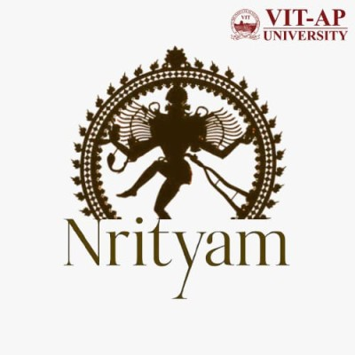
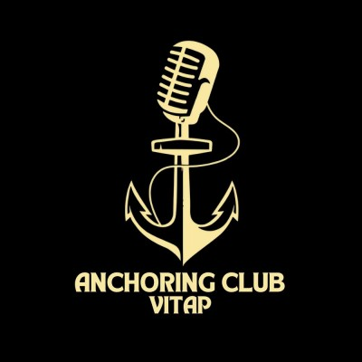
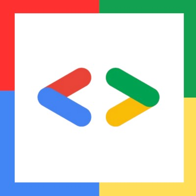

. * . . * . * .
* ╭─────────────────────────╮ .
─┤ R E E T M I S H R A ├─ *
. ╰─────────────────────────╯ .
. * . * .
Reet Mishra
B.Tech CS (AI/ML) · VIT-AP · Class of 2027
I like building things I can poke at. A movie recommender that argues with
itself, an RL agent learning not to walk into walls, and this summer, a detour into neuroscience:
finding signal in noisy brain recordings with Neuromatch Academy.
◂ click a planet to explore its orbit ▸
home
┄┄┄┄┄┄┄┄ · ABOUT · ┄┄┄┄┄┄┄┄
About
I'm based in Hyderabad, and most of what I do sits somewhere between machine
learning, full-stack development, and design. I build things mostly as a way of thinking
through them, curious about how something works down to the wiring, not just that it works. Outside
of code, it's design, community leadership, journaling, and sketching. Right now I'm looking for
internships in ML/AI, data science, frontend, or design.
Programming
Java
Python
SQL
AI / ML
ML
NLP
RL
Tools
Git
REST APIs
MNE-Python
Figma
Canva
Languages
English fluentHindi fluentKorean intermediateGerman elementary
FIITJEE Class XII · Mathematics, Physics, Chemistry2020 – 2022
Scored 93%
Vista International School Through Class X
2016 – 2020
Scored 93% in Class X
Voted/selected as Deputy Head Girl (Aug 2017 – Aug 2018), then Head Girl the following year
(Aug 2018 – Aug 2019), serving both roles back to back
┄┄┄┄┄┄┄ · PROJECTS · ┄┄┄┄┄┄┄
Projects
Recomme To Me Movie Recommender System
Python · Flask · scikit-learn · JS
Implemented 5 recommendation algorithms from scratch (item-based CF, TF-IDF content-based, SGD
matrix factorization, hybrid, Bayesian popularity) behind a shared interface, served through 12
Flask REST endpoints
Built an evaluation harness on MovieLens with a leakage-free per-user temporal split, scoring
RMSE, Precision@10, recall, coverage, diversity, and novelty; tuned the hybrid's blend weight with
a parameter sweep
Vanilla JS frontend compares every algorithm's picks for any movie side by side; verified
personalization quantitatively (cross-user top-10 overlap of 0.52 for popularity vs 0.03 for item
CF)
in progress automated pytest suite over the Flask endpoints
(schema, input validation, edge cases), run on each push via GitHub Actions
learn-to-RL Interactive RL Visualizer
Vanilla JS · Canvas
Browser-based playground visualizing RL algorithms (Q-learning live; SARSA, DQN, policy
gradient planned) with zero install and zero dependencies
Live Q-table as directional arrows on a 7×7 grid with real-time reward charts and
ε-decay tracking; full Q-learning update rule in ~200 lines of vanilla JS, with an
interactive code walkthrough
Roll-number lookup returning a student's per-subject marks alongside a rule-based remark
derived from those scores; unrecognised roll numbers return a recheck prompt rather than an
error
A summer computational neuroscience program giving students the opportunity to research open
datasets; led a four-student project pod analyzing intracranial (ECoG) recordings from an n-back
working-memory task, testing whether broadband high-gamma power (70–170 Hz) tracks
memory load
Built the team's MNE + FOOOF preprocessing pipeline as primary coder
Traced an initial null result to a normalization artifact; after correcting it, found a load
effect in 2 of 3 subjects, above-chance multiclass load decoding in all 3 (permutation
p < .001), and a load-dependent shift in the aperiodic (1/f) spectral exponent
(p < .002)
Presented findings to course TAs; prepared results for abstract submission
Vice President Open Source Community · VIT-APOct 2024 – May 2026
Led strategic direction for an 85+ member community across technical and creative tracks;
organized 10+ workshops and hackathons, after starting as Events / Track Lead
President Madhya Bharat Association · VIT-AP
May 2024 – May 2026
Managed cross-functional teams of 50+ across design, content, and logistics; improved member
retention 30% and event attendance 60%



Design Team Lead Nrityam, Anchoring Club, GDG on Campus · VIT-AP
May 2024 – May 2025
Led design teams concurrently across 3 student organizations, delivering visual assets for 5+
events with audiences of 500+
Organized the #GoogleDevs Sprint 2K25 Hackathon (19 Mar 2025) through GDG on Campus VIT-AP, run
in collaboration with Google Cloud